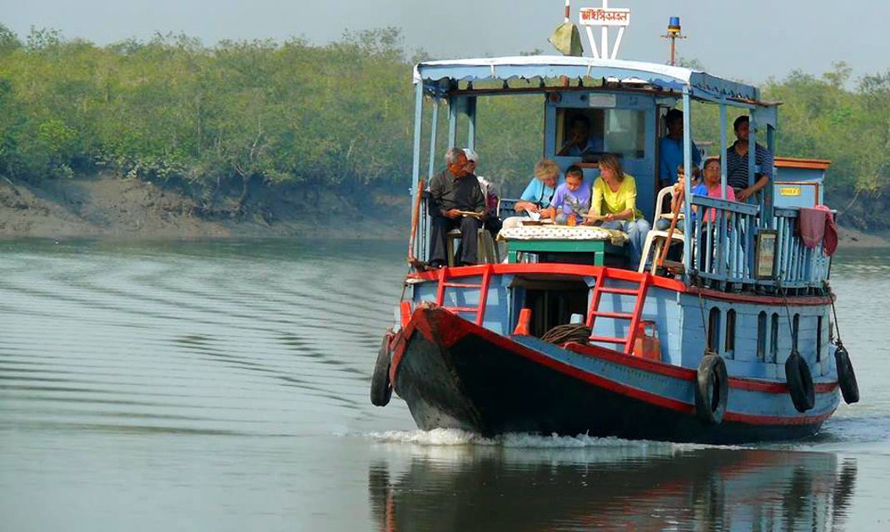
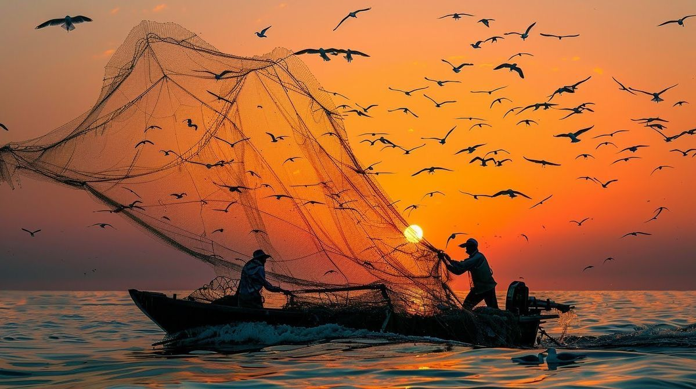
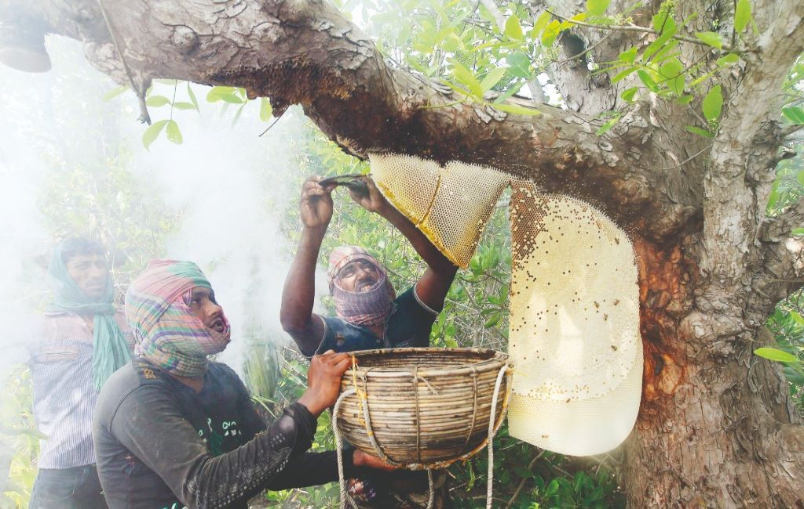

Sundarban Wild Escape was established by conservation naturalists and native delta boatmen to offer an uncompromising alternative to commercial tourism: quiet luxury that actively protects the world’s most enigmatic tidal sanctuary.
Ecotourism is hollow without community empowerment. In an ecosystem where human livelihoods and apex predators share a razor-thin border, our enterprise redirects tourist revenue directly to local households.


Unlike continental jungles with fixed earth, the Sundarbans disappears and reappears twice each day with the lunar tides.
The difference between low tide (Bhati) and high tide (Jowar) routinely exceeds 3.5 to 4.5 meters. Channels that allow a 40-foot cruiser at noon turn into exposed silt mudflats by sunset.
Because oxygen cannot penetrate waterlogged, anaerobic saline mud, mangrove species like Sundari and Goran sprout thousands of conical breathing roots upward into the open air like wooden spikes.
The dense stilt-root matrix dissipates violent cyclone storm surges generated in the Bay of Bengal, protecting Kolkata and millions of hinterland lives from devastating oceanic inundation.
The Sundarbans Tiger Reserve is governed by strict statutory wildlife protection laws under the West Bengal Forest Department. We implement triple-redundancy safety systems so our guests experience raw wilderness in tranquil security.
Fitted life vests for every single passenger, including specialized child sizes, verified before every departure from Godkhali.
Step ashore solely at Forest Department watchtowers protected by 20-foot wire fencing and armed forest security rangers.
Every vessel entry requires an accredited Forest Department local naturalist with VHF radio link to river patrol stations.
Deep within the Sundarbans, religious divides dissolve into a shared code of forest reverence.

In Bengal’s tidal folklore, Bonbibi is the guardian goddess of the forest, revered by Hindu and Muslim villagers alike. Her adversary is Dokkhin Rai, the lord of the tigers who preys upon greedy humans who enter the jungle with excessive avarice.
Before any local honey hunter (Mawali), woodcutter (Bawali), or fisherman (Jele) steps onto the forest mudbanks, they bow at humble earthen mud-shrines dedicated to Bonbibi, vowing to take only what they need to survive and never more.

Every April and May, small teams of Mawalis venture into the deep core mangrove forest under Forest Department licensing to harvest wild honey from the giant Asian rock bee (Apis dorsata).
Facing the constant threat of tigers, they use fragrant mangrove smoke (kuru) to gently dislodge bees without harming the colony, harvesting only the honey-bearing crown while leaving the brood comb intact to regenerate.
When you call or WhatsApp Sundarban Wild Escape, you speak directly with our senior expedition directors who manage our own boats and field staff at Godkhali. We answer your questions candidly regarding season, tides, and permits.